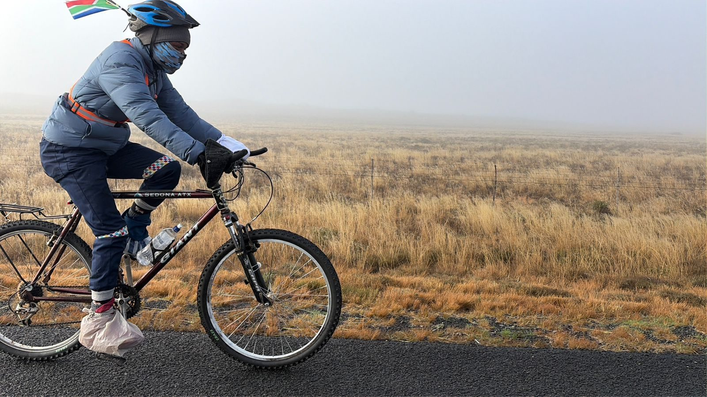

A boy with no bicycle
Gift fell in love with cycling but had no bike and no money to buy one. So he collected old scrap parts and built his first bicycle himself.
From the village to the start line
He started riding around his community, then entered challenges around Louis Trichardt, including a 176 km stage race and the Makopa challenge, where he came first.
The foundation begins
Seeing how few young people had bikes, Gift started the Gifted Local Talent Foundation to get bicycles to youth in remote villages.
The first attempt
He planned to ride to Cape Town to raise 250 bicycles and went door to door asking local businesses to back him. It did not come together.
Covid, then survival
The pandemic stopped everything. Family members lost work and Gift had to put the dream aside to provide for them.
On Youth Day, he rode out
No better day than Youth Day. Gift got his old bicycle ready and set off for Cape Town with no funding, riding for every child who needs a bike.
